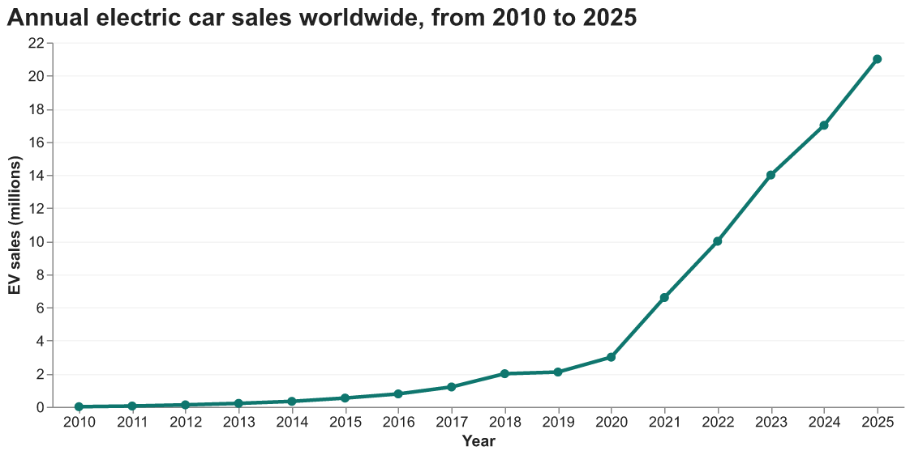
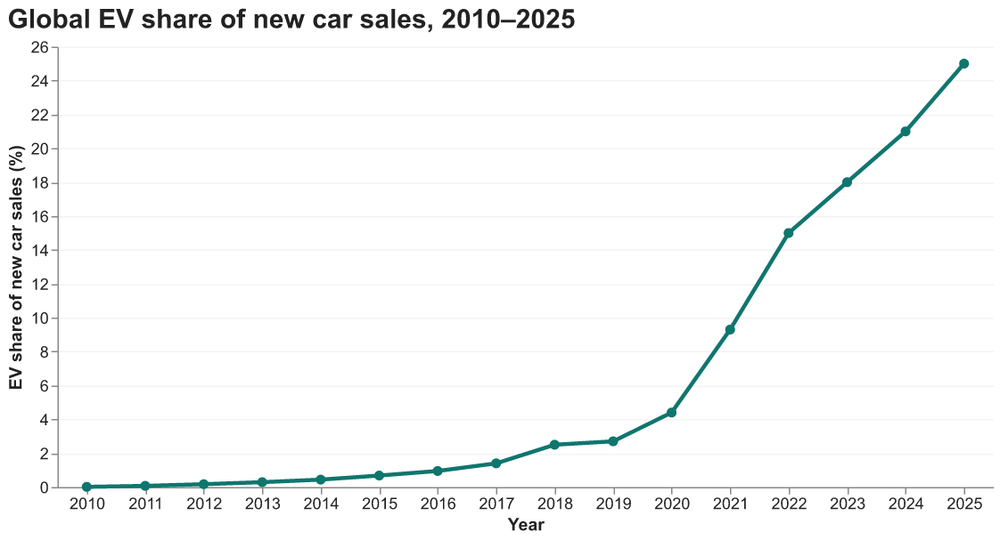
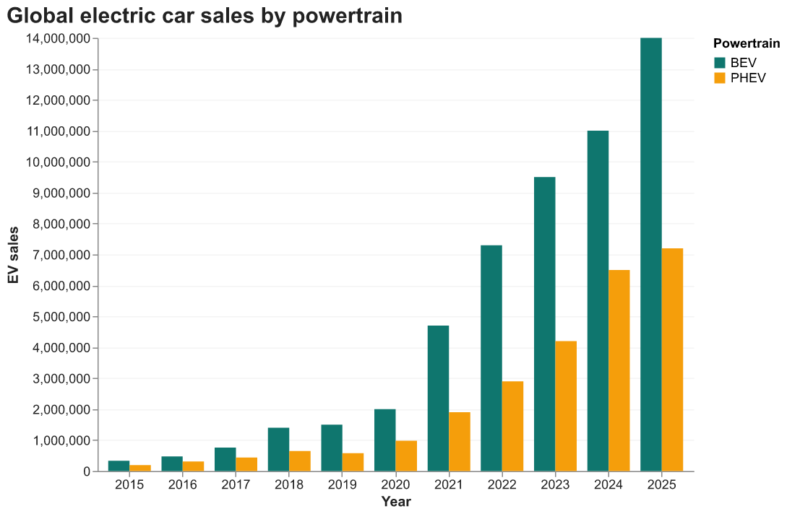
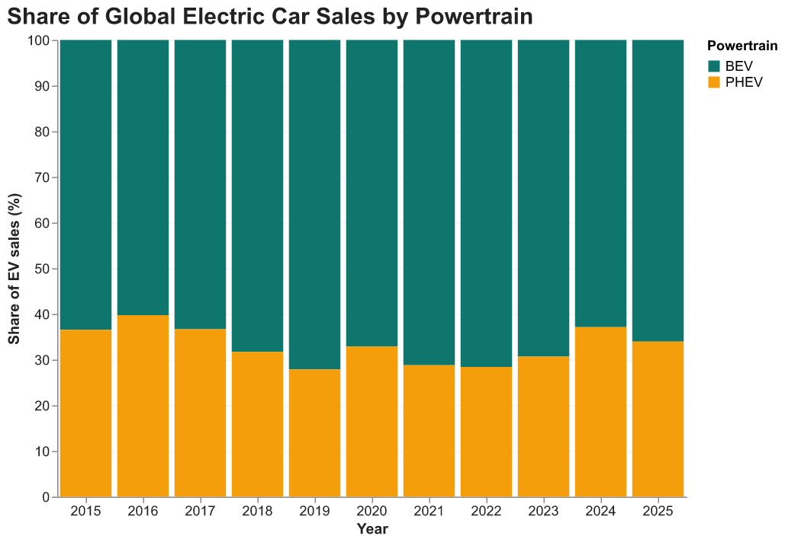
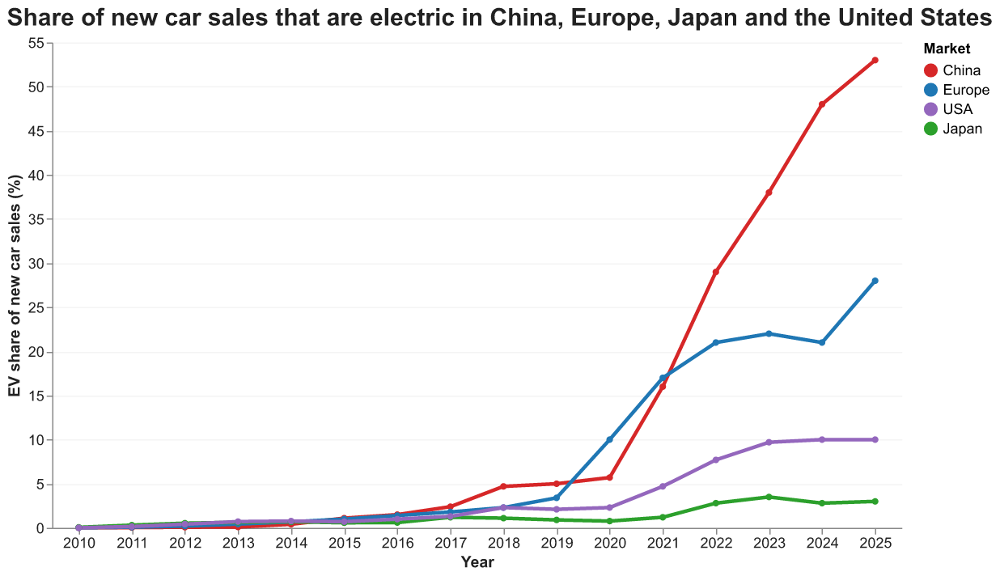
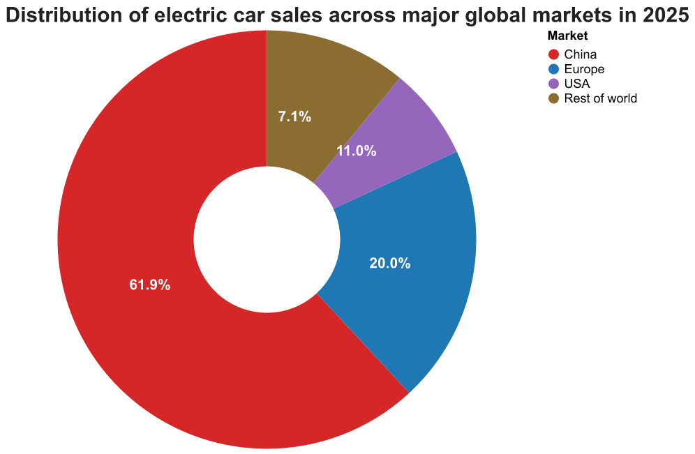
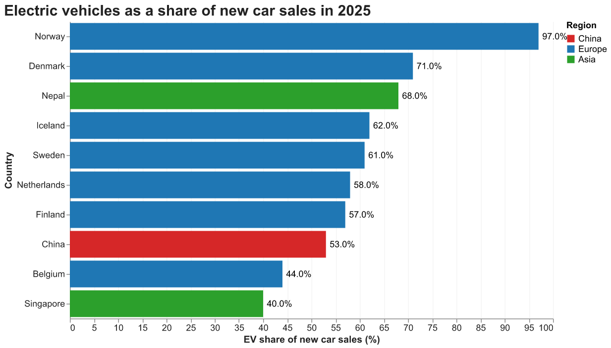
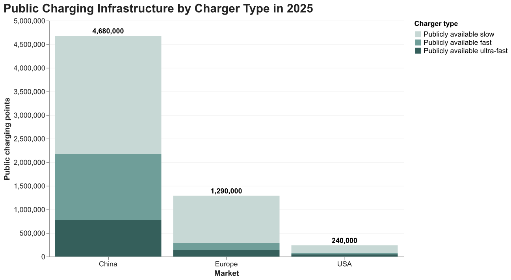
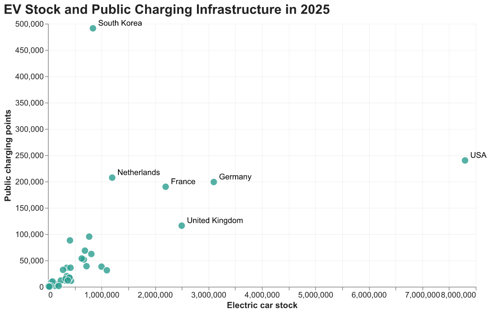
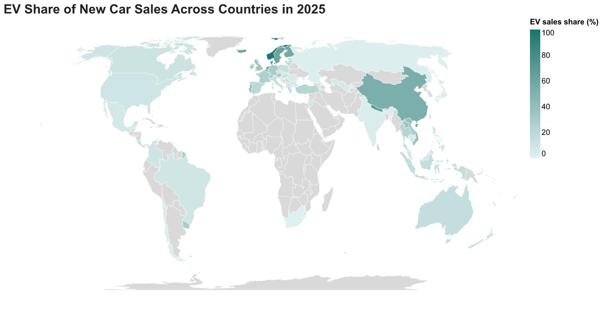

In Kyrgyzstan, where I grew up, electric cars used to be a curiosity. Over the past few years that changed quickly: more and more of them arrive from China, and the duty-free import quotas that the Eurasian Economic Union sets for EVs tend to run out early in the year. I wanted to know whether what I was seeing at home was part of a global pattern, and what that pattern actually looks like when you put the numbers side by side.
Electric vehicles have moved from a relatively small segment of the automobile market to a major part of global car sales. This acceleration has been supported by falling technology costs, stronger government policies, a wider range of EV models, and growing investment in charging infrastructure.

In 2015, about 530,000 electric cars were sold worldwide. By 2020, annual sales had reached 3 million, and by 2025 they had climbed to roughly 21 million - a sevenfold increase in just five years. The curve remains relatively flat through much of the 2010s before rising sharply after 2020, marking a clear shift from gradual growth to rapid global expansion.

Source: International Energy Agency, Global EV Outlook 2026.
Rising sales alone do not show that electric cars are replacing conventional ones, since the overall car market can grow too. Market share answers that question. Until 2019, electric cars made up less than 3% of new car sales worldwide. By 2025, they accounted for about 25%, or one in four new cars sold. In other words, the growth in EV sales has come at the expense of gasoline and diesel cars, not alongside them.
Behind the 21 million figure are two quite different kinds of cars. A vehicle's powertrain is the system that delivers power to the wheels. In the electric vehicle market, the two main types are battery electric vehicles (BEVs) and plug-in hybrid electric vehicles (PHEVs). BEVs run entirely on electricity, while PHEVs combine an electric motor and battery with a conventional gasoline engine.


Source: IEA Global EV Outlook 2026.
Both types have grown at a remarkably similar pace. BEV sales rose from about 330,000 in 2015 to around 14 million in 2025, and PHEV sales from about 190,000 to roughly 7.2 million. As a result, the mix has barely changed: plug-in hybrids made up about 37% of electric car sales in 2015 and about 34% in 2025. Their share dipped to around 28% in 2019 and 2022, then climbed back to 37% in 2024. Battery electric cars still account for two out of every three EVs sold.
The global average of one in four hides very different stories in the world’s largest car markets.

The global EV transition is accelerating, but the pace of adoption differs substantially across major markets.
As recently as 2021, China and Europe were roughly level, with electric cars making up about 17% of new sales in each. Since then, their paths have split. China’s share tripled to 53% in 2025, while Europe’s grew more unevenly, dipping in 2024 before reaching 28%. In the United States, the share rose quickly after 2020 but has stayed at about 10% since 2023. Japan, one of the world’s largest car markets, has barely moved: electric cars still make up only about 3% of its new sales.
Where are all these electric cars being sold? Mostly in one country.

Six of every ten electric cars sold in 2025 were sold in China. The rest of the world outside China, Europe, and the United States bought only about 11%.
Total sales, however, mostly reflect the size of a country’s car market. A better measure of how far the transition has gone is the share of new cars that are electric. By that measure, the leaders look very different.

Seven of the ten countries with the highest EV share are in Europe, led by Norway, where 97% of new cars sold in 2025 were electric. Most of them are small, wealthy markets that sell relatively few cars in total. China is the only large market on the list, at 53%. The most surprising entry is Nepal: with 68% of new car sales electric, it ranks third in the world, ahead of Iceland and Sweden. The United States, the second-largest market by total car sales, does not come close, at about 10%.
Electric cars need somewhere to charge. In 2025, the world’s three largest EV markets had very different public charging networks, both in size and in how fast their chargers are.

China operates a substantially larger public charging network than either Europe or the United States. The US network appears relatively small when all three markets are displayed on the same scale. China had about 4.7 million public charging points in 2025, more than three times as many as Europe (1.3 million) and roughly twenty times as many as the United States.
Nearly half of China’s public chargers are fast or ultra-fast, compared with about one in five in Europe, where most public points are slower chargers.
Across individual countries, the relationship between electric vehicle adoption and charging infrastructure can also be examined by comparing the number of electric cars on the road with the number of public charging points.

The ratio of cars to chargers varies widely. Korea has about 840,000 electric cars and nearly 500,000 public chargers, roughly two cars per charger. The Netherlands and Germany have similar numbers of public chargers, about 200,000 each, but Germany has two and a half times as many electric cars. France and the United Kingdom have fleets of similar size, but France has about 190,000 public chargers, compared with fewer than 120,000 in the UK. The United States has the largest EV fleet outside China, around 8 million cars, yet only slightly more public chargers than the Netherlands.
On a map, the pattern becomes clear: electric cars have taken over new car sales in only a few parts of the world. In most of Northern Europe, more than half of new cars sold in 2025 were electric, and in China the share reached 53%. In North America it was around 10%, across Africa about 1%, and for much of the world the IEA has no data at all.

The Global EV Transition Remains Highly Uneven
In 2025, one in four new cars sold worldwide was electric, up from fewer than one in thirty before 2020. Behind that global number, however, are very different national stories. China alone bought six of every ten electric cars sold, and more than half of its new cars are now electric. Europe reached 28%, while the United States has stayed at about 10% and Japan at about 3%. Some of the highest shares are found in small countries: Norway, where almost every new car is electric, and Nepal.
Charging networks are just as uneven, but they do not explain the differences on their own. Korea has the densest public network relative to its fleet. The clearer pattern is in policy: the countries that moved fastest made electric cars cheaper than petrol ones, either through taxes or by requiring carmakers to sell them. As several of these countries now begin to scale back their incentives, the next few years will show whether the transition can keep its pace without them.
For importing countries like Kyrgyzstan, with cheap hydropower and a growing supply of affordable Chinese EVs, Nepal’s experience may be the most relevant example of all.
International Energy Agency (IEA). Global EV Outlook 2026, EV Data by Country.
The dataset contains historical and projected information on electric vehicle sales, sales shares, vehicle stock, powertrain types, and public charging infrastructure across countries and aggregate regions.
All visualizations in this article use historical observations from the IEA dataset.